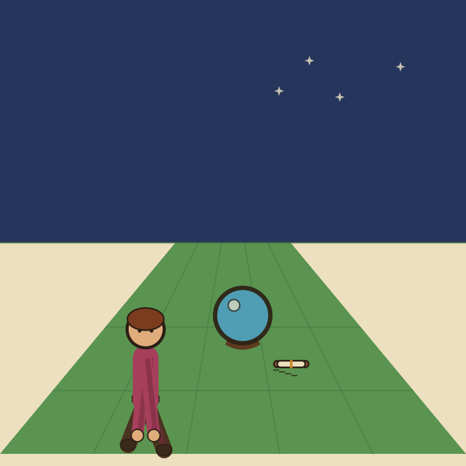
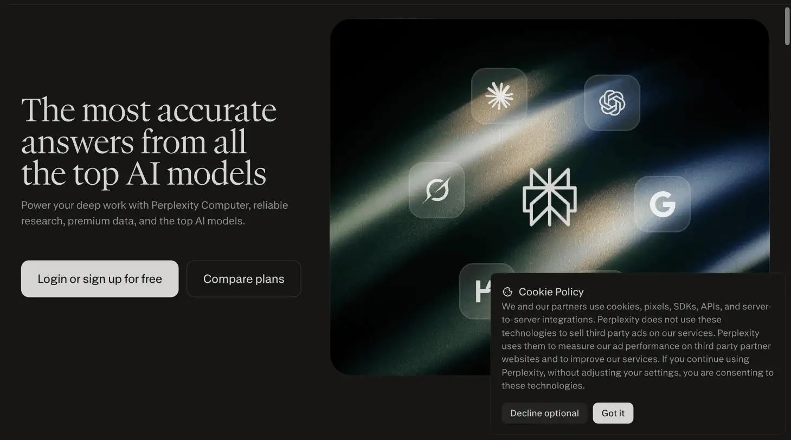
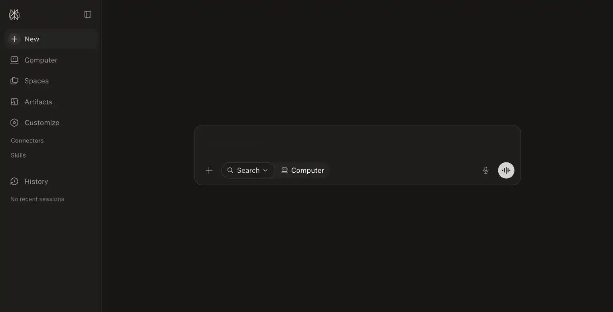

Perplexity Pro

The oracle always cited her sources. Nobody in the village ever actually went and read one.
Perplexity Pro is an AI search engine that answers with source citations attached to every claim, at $16.60-$20/month. Ranked #16 on Solos Gems (5.0/10), it's best for competitive research, market research, and fact-checking, but a nice-to-have rather than a must-have if you already pay for ChatGPT or Claude with browsing.
Perplexity Pro gives you cited, sourced answers, which is nice, but if you already pay for ChatGPT or Claude, this lands more as a nice-to-have than a need-to-have.
- Value for price4/10
- Capability5.5/10
- Ease of use6.5/10
- Trial safety5/10

Perplexity's pitch is a search engine that answers in prose with citations attached to every claim, rather than a chatbot that occasionally browses the web. For a content-driven solo business, that citation trail is the actual product. It's what lets you fact-check a claim before it goes in an article.

Perplexity's core differentiator is that answers come with clickable source citations attached to claims (shown above), a meaningful difference from a standard chatbot response, since you can verify a fact instead of taking the AI's word for it.
Example from perplexity.ai. Not independently tested by Solos Gems.Pricing breakdown
- Pro: $20/month, or roughly $16.60/month effective with annual billing (about 17% off)
- Education Pro: $10/month for verified students/educators (sometimes free for the first 12 months via promotions)
- Enterprise Pro: $40/seat/month, or $400/year
- Max: $200/month
Pro includes access to multiple underlying models (the exact lineup shifts over time, check the current model list before subscribing), document uploads, and deeper web search than the free tier.
Where it earns its keep for a solo site
If you're publishing review or comparison content, like this site, the value isn't conversational chat, it's being able to ask "what's the current pricing for X" and get an answer with a source link you can verify and cite yourself, rather than trusting an unsourced summary. That's a narrower use case than "general AI assistant," which is why it's worth weighing against tools you may already pay for.
Pros
- Citations make it fast to verify a claim before publishing it
- Useful for competitor pricing checks and fast-moving factual research
- Document upload lets you query a PDF or report directly
Cons
- Overlaps heavily with browsing-enabled ChatGPT/Claude plans you may already have
- $20/month is a hard sell as a single-purpose research tool for a one-person budget
- Source quality still varies by query, citations aren't a guarantee of accuracy, just traceability
See how this compares to NotebookLM →
Common questions
Do I need Perplexity Pro if I already have ChatGPT or Claude?
Probably not. It overlaps heavily with browsing-enabled ChatGPT or Claude plans you may already pay for, the real differentiator is citation quality, not raw research capability you don't already have access to.
Is $20/month justified for a single research tool?
It's a hard sell as a single-purpose tool for a one-person budget unless competitive or market research is a core, recurring part of your work, not an occasional task.
Are Perplexity's citations always accurate?
Citations guarantee traceability, not accuracy, source quality still varies by query. Verify anything consequential against the linked source rather than trusting the summary alone.